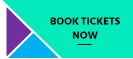
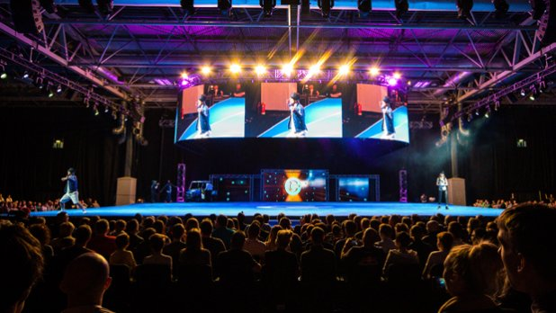

Gadget Show Live 2016 Ticket on Sale
by John Smith
Oct 10, 2015
Leading brands and emerging inventors showcase their best products at Gadget Show Live, giving you the chance to learn, experience and invest in the latest products on the market.With interactive features and zones throughout, there are loads of opportunities for you to get hands on with the latest technology. Following the unveil of the show’s new look and feel, take a look at some of the features that are also brand new for 2016.
Booking your tickets
Tickets for Gadget Show Live 2016 are now on sale! Bookings are handled by Speeddata on behalf of Gadget Show Live. Click on the button below to open a new browser.
Super Theatre
2016 sees the return of our live Super Theatre performances. Hosted by Gadget Show favourites Jason, Amy, Jon and Ortis, this one hour live show will feature reviews of some of the latest technology on the market as part of an adrenaline fuelled, awe inducing experience. With audience participation added into the equation it’s a must see performance for all gadget lovers!
The Connect Theatre
The Connect Theatre is the place to go at Gadget Show Live for editorial reviews of some of the latest products in the consumer technology market. Throughout the day our guides will show and review the best available products in a series of categories in the consumer tech industry.
Home Cinema
New to the show floor this year is the Home Cinema Zone! Test out that cinema style experience that could be in your home in our purpose built living room in the middle of the zone. This will be kitted out with latest audio, TV and surround sound tech for you to try.